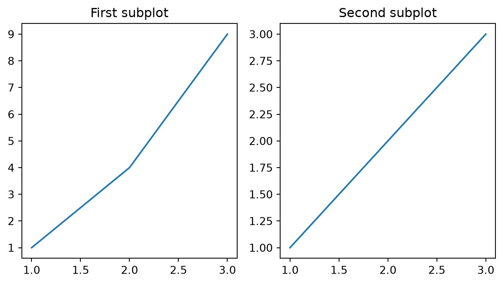
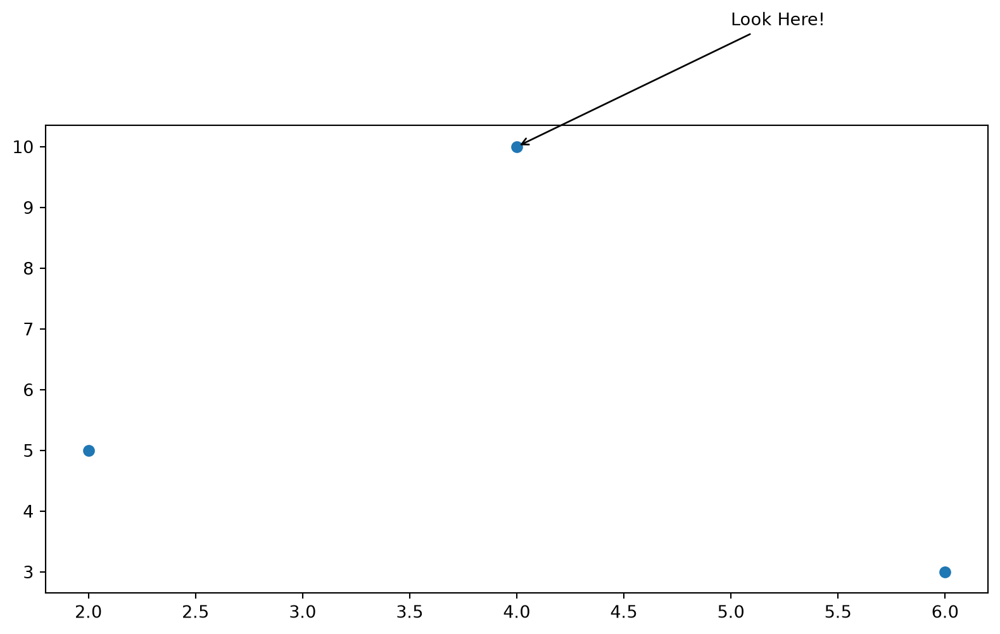
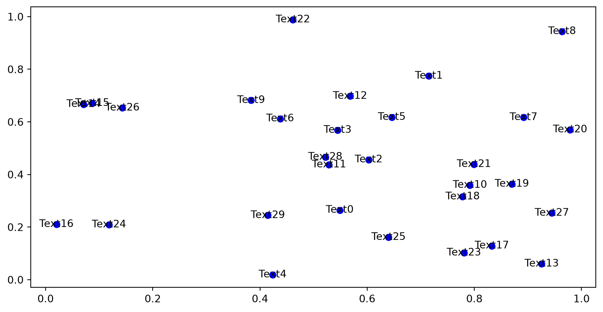
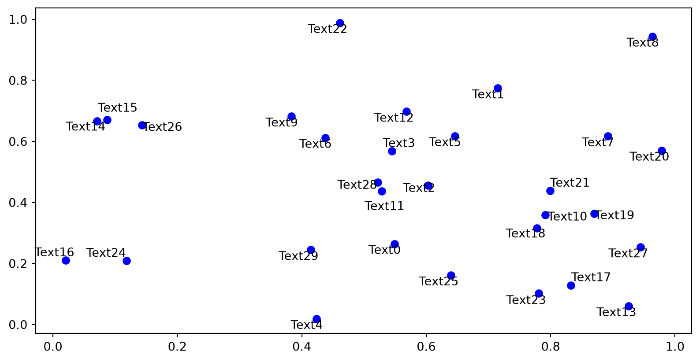

How to make our visualizations nice to look at
Code Review / Peer Review Workshop
Tech Talk! (Hayden!)
Lots of advice about how to do a review
Reviews should feel:
positive (safe, supportive, growth-driven)
useful (constructive feedback, technical knowledge exchange)
actionable (specific critiques -> specific fixes)
time-constrained (short enough that you are willing to do it again)
Some more skills
Identifying Misleading Visualizations
A good visualization shouldn’t be a puzzle. It should help the audience visually see the finding
It should be…
- Readable: title, labels, scales, text should be concise and use audience-friendly terminology
- Accurate: data should be represented honestly
- Purposeful: should answer some question and/or directly relate to the overall topic
- Focused: should highlight the important stuff, don’t overdo it with the fun design things
Bar charts, scatterplots, histograms, line plots, etc. are GREAT plots but what about the the slightly more unique ones?
*Helpful Packages for Maps: ‘geopandas’ (handles geometric shape files), ‘geopy.geocoders import Nominatim’ (OSM geocoding)
Adjust:
alpha | Transparency (0 = invisible, 1 = opaque) | Overlapping points; dense scatterplots |linewidth | Line thickness | Emphasize a trend line; de-emphasize gridlines |s | Marker size in Matplotlib scatterplots | Make points visible without overwhelming the figure |edgecolor | Marker outline | Separate overlapping points or improve contrast |figsize | Figure dimensions | Make labels readable and match the final slide/page |color / hue | Color or group mapping | Distinguish a small number of meaningful groups |bins | Histogram bin count | Explore distribution shape; check whether conclusions are robust |. . . The list goes on * Use ‘?’ and ‘help()’ to see all the possible properties of a function!
ACCESSIBILITY: is the figure still understandable in grayscale or for someone who may be color-blind?
If we have time I’ll show a live demo of changing some things!
-Subplot(plt.subplot) lets you display multiple plots in a single figure window
-Useful when comparing several datasets or parameters side by side
-Common use cases: for comparisons, different variable combinations, model results, control vs. treatment groups




Broken axis
– Starting y-axis above zero exaggerates minor differences
Cherry-picking/selective statistics
– Hiding parts of the data or focusing only on extremes
Axis manipulation/Misleading Scales
–Stretching or compressing axes to make a trend look stronger/weaker
Unlabeled axes/confusing units